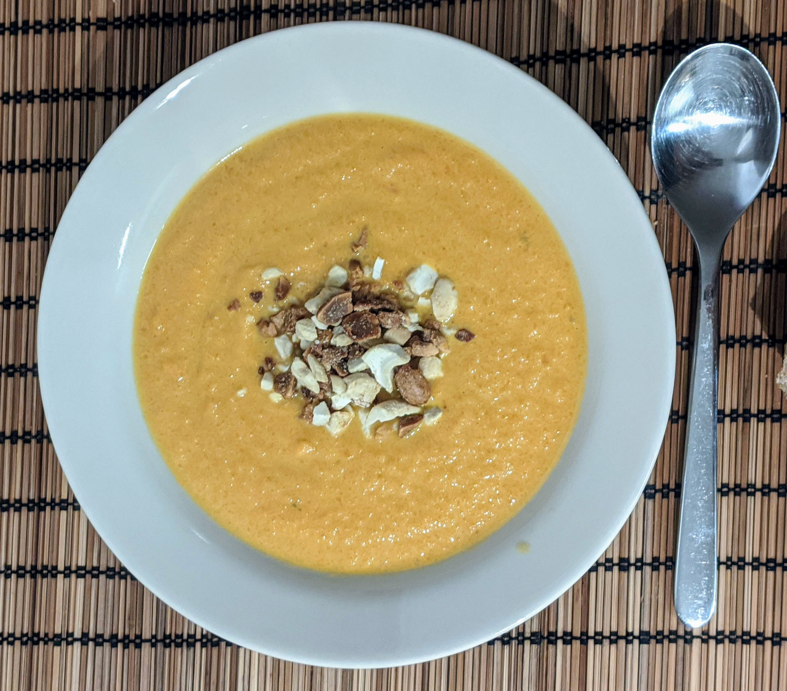

Soupe carottes-oranges

Pour deux personnes (trois, avec des petits bols) :
- 600g de carottes
- Une orange
- Un oignon
- 15cl de crème fraîche
- Un cube de bouillon
- (facultatif) Des cacahuètes, ou des noix de cajou, ou un truc équivalent, non salé.
- Éplucher et émincer grossièrement l'oignon, puis le faire revenir au fond d'une cocotte avec un peu d'huile d'olive.
- Pendant ce temps, éplucher et couper les carottes, puis les ajouter dans la cocotte avec le bouillon et un demi-litre d'eau.
- Porter à ébulition et laisser cuire une bonne demi-heure ; il faut que les carottes soient tendres.
- Pendant ce temps, presser l'orange, et mélanger le jus avec la crème en mélangeant bien.
- Le cas échéant et toujours pendant que les carottes cuisent, écraser les cacahuètes au pilon, grossièrement.
- Mixer les carottes dans leur eau, puis bien mélanger le tout et laisser à feu très doux pour que ça reste chaud. On peut faire ça au blender pour que ça soit bien velouté, ou simplement au mixeur.
- Servir bien chaud, en saupoudrant les assiettes ou les bols de petits bouts de cacahuète.
Retour à la liste des recettes